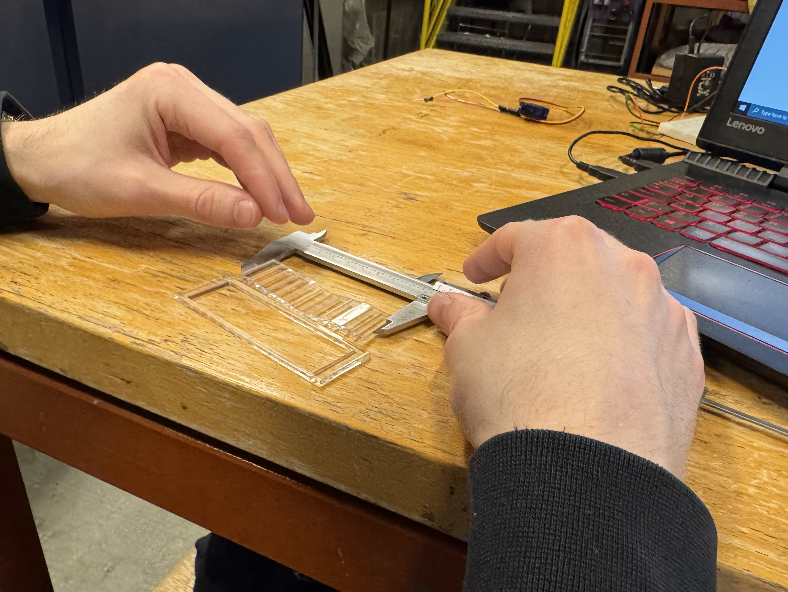
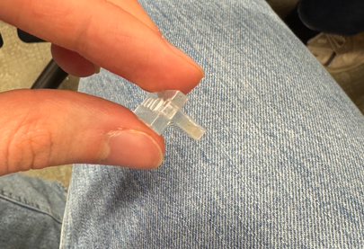

Verkefni 2
LýsingVerkefnalýsing
Einstaklingsverkefni:- Notaðu vínylskerann til að búa til eitthvað. 100x50cm skurðarflötur max.
- Hannaðu parametrískt, geirneglt (pressfit) módel. Módelið þarf að vera skalanlegt á mismunandi máta (efnisþykkt, hæðir og breiddir sem nemandi velur), útfært með góðum parametríum í hugbúnaði að eigin vali. Mælt er með Autodesk Fusion 360 ef nemandi vill fá aðstoð kennara, en hafi nemandi tök á því að nota annan CAD hugbúnað þá er það í góðu lagi.
Hönnunin þarf að innihalda amk 3 geirneglda festi punkta. Auka stig fyrir mismunandi gerðir af festingum.
Hægt er að velja um mismunandi gerðir af efni fyrir geislaskerann:
- ~3mmx300mmx500mm birkikrossviður
- ~3mmx500mmx500mm akríl
- Eitthvað til af fleira efni: Pappi, 6mm krossviður, 2mm akríl osf.
Skerðu út módelið og skjalfestu á heimasíðunni þinni. Settu hönnunarskjöl inn á gagnabanka og settu hlekk inná síðuna þína.
Hópaverkefni:
Veljið geislaskera og ákvarðið með prófunum kerf fyrir þann skera. Skjalfestið á ykkar persónulegu vefsíður.
Nemendur mega vinna saman 3 í hóp.
Vínylskurður (límmiðagerð)
Byrjað var á að downloada InkScape sem er open-source myndvinnslu forrit. Því næst var að ákveða hvað ég vildi vínylskera og var logo sem ég hannaði sjálfur fyrir valinu sem ég teiknaði í ProCreate á iPad, en logoið er fyrir fótboltaliðið "Mewers FC" sem er í utandeild. Ég notaði Convertio til að breyta logo-filenum úr PNG í svg til að setja hann á InkScape. Því næst var að færa logoið yfir í InkScape þar sem farið var eftir eftirfarandi stillingum:
- Fill: No paint
- Stroke: Flat color
- Stroke style: Width: 0,02 mm
Einnig breytti ég stærðinni á merkinu en til að halda merkinu í réttum hlutföllum var ýtt á lásinn efst á InkScape. Ég vildi að límmiðinn myndi passa á pílustandinn sem gerður er í næsta hluta verkefnisins en hann var 7 cm á hæð. Síðan var InkScape filenum exportað sem pdf og hann færður yfir á tölvukubb sem var loks settur í tölvuna sem vínylskerinn var tengdur við og vínyllinn skorinn út á svörtum vínyl. Afraksturinn má síðan sjá hér til hægri.
KERF-mælingar
Framkvæmd á mælingu kerfsins
Áður en farið er í að geislaskera pressfit hlut er mikilvægt að vita svokallað KERF sem er þykkt geisla geislaskerans. Það er mikilvægt að taka tillit til efnisins sem geislinn fjarlægir við skurðinn. Því er KERF-inu bætt inn í teikningarnar, þannig að allar skurðarlínur séu færðar með „offset“ áður en hluturinn er skorinn út. Þetta tryggir að teiknaðir hlutir séu í samræmi við raunverulega hluti eftir geislaskurð. Vert er að nefna að ég framkvæmdi KERF mælinguna tvisvar, en í fyrra skiptið þá vann ég með Helga Níeljohníus og Kára Hólmgrímssyni. Það komu hinsvegar smá sprungur í prufuna þegar hún var sett saman og sú KERF mæling var fyrir svartan akrýl en ég gerði ráð fyrir að pílurnar á pílustandinum myndu sjást í gegn og fann þar af leiðandi út annað KERF fyrir glæran akrýl með honum Patreki.
Við Patrekur teiknuðum saman 13 kassa hlið við hlið í Fusion og fluttum teikninguna yfir í Inkscape á DXF-formi. Mikilvægt er að tryggja að engar tvöfaldar línur séu til staðar, þar sem geislaskurðarvélin myndi skera sömu línu tvisvar, sem gæti valdið skekkju í kerfmælingunni. Ef línur eru skornar oftar en einu sinni, eykst bilið milli kassanna þar sem meira efni fjarlægist en gert var ráð fyrir.
Hér til hægri má sjá teikninguna af kössunum í Fusion. Síðan voru sömu stillingar og áður notaðar í InkScape:
- Fill: No paint
- Stroke: Flat color
- Stroke style: Width: 0,02 mm
InkScape-skránni var síðan exportað sem svg og hún sett á tölvukubb og í tölvuna sem tengd var við geislaskerann. Við minnkuðum síðan hlutinn okkar í InkScape á geislaskera tölvunni til að sóa ekki efninu í óþarfa. Síðan var ýtt á "print" og valinn staður þar sem skera átti út á plötunni. Mikilvægt er að opna fyrir gasið áður en ýtt er á start á geislaskeranum en það er gert svo það kvikni ekki í plötunni. Eftir skurðinn þá var annars vegar lengd gat rammans mælt en hún reyndist vera 86.96 mm og hins vegar var lengd allra kassana mæld en hún var 82.58 mm. Loks voru línurnar innan rammans sem geislaskerinn skar 14 talsins. Því fékkst KERF-ið (þykkt geislans) með eftirfarandi hætti:
KERF: (86.96mm - 82.58mm)/14 = 0.313 mm
KERF sannreynt með prufu
Til að sannreyna KERF-ið var síðan gerð prufa til að sjá hvort pressfit-ið virkaði. Þykkt plötunnar var mæld með skífumáli en hún reyndist vera 3mm og því var prufan hönnuð (parametrískt) með þeirri þykkt. Eftir að prufan hafði verið hönnuð var þykkt KERF-sins síðan stungið inn í "Kerf width" í Fusion undir "manufacture" og síðan "cutting". Því næst var prufan flett út og face contours valin fyrir hlutinn og slökkt á "lead in" og "lead out" undir 2D profile stillingunni. Loks var ýtt á post process go hakað við stillinguna only cutting til að losna við óþarfa línur. Þessu var síðan postað og sett í InkScape með sömu stillingum og áður. Síðan var prufan skorin út og reyndist hún vera gott press-fit. Ég ákvað síðan að gera aðra prufu með horn samskeytum og þau virkuðu vel svo lengi sem hluturinn minn var skorinn út ofarlega í vinstra horni geislaskerans þar sem nákvæmnin versnar því fjær upphafspunkti geislaskerans sem þú ferð, en ég lenti í smá brasi með festingarnar þegar ég skar út neðar en 1/3 af akrýlplötunni.
Geislaskurður
Hönnunarforsendur
Það fyrsta sem ég gerði var að ákveða hvað ég vildi skera út. Eftir að hafa hugsað mig um í nokkurt skeið rann upp fyrir mér að mig langaði í pílustand og því ákvað ég að hanna einn slíkan. Hönnunarforsendurnar voru þær að mig langaði að geta hýst tiltölulega margar pílur í standinum, en einnig þótti mér mikilvægt að hafa hann ekki of umfangsmikinn. Loks langaði mig að gera tvær mismunandi gerðir af festingum fyrir aukastigið sem í boði var. Fyrirmynd pílustandsins var síðan standur sem maður systur minnar á, en hann má sjá hér til hægri. Þar sem mig langaði að koma límmiða mínum á standinn þá ákvað ég að í staðinn fyrir að hafa standinn eins og þennan til hægri, þá ákvað ég að hafa hliðarplötur nema opið á annari langhliðinni. Hins vegar var stuðst við málsetnigar að mestu leyti þar sem stærð píla er svo gott sem stöðluð, en hæð standsins var ~70 mm, og hæð milliplötunnar frá botni ~35 mm.
Hönnun
Pílustandurinn minn var teiknaður í Fusion með breytilegum parametrum, þar sem skilgreind voru hæðin, lengdin, breiddin og þykkt plötunnar, en einnig hversu marga fingur hver hlið hafði, sem var mjög hentugt þar sem auðvelt var að breyta hönnuninni eftirá.  Farið er yfir þetta ítarlega í myndbandi Hobbyist maker á youtube. Ég ákvað síðan að hafa pláss fyrir 18 pílur á mínum standi eða 3x6. Þvermál gata efstu plötunnar voru um 10 mm hvert en á milliplötunni voru götin 3 mm í þvermál. Eins og kemur fram í myndbandi Hobbyist maker á youtube þá gerði ég fyrst ráð fyrir að það væri í lagi að hlutirnir skærust en síðan notaði ég combine tólið til að eyða tvöföldum svæðum teikningarinnar og út komu tennur fyrir pressfit-ið. Módelið mitt var hannað í 3d í design og það síðan flett út í manufacture á sama hátt og við gerð prufunnar hér að ofan. Módelið mitt í Fusion má síðan sjá hér til hægri
Farið er yfir þetta ítarlega í myndbandi Hobbyist maker á youtube. Ég ákvað síðan að hafa pláss fyrir 18 pílur á mínum standi eða 3x6. Þvermál gata efstu plötunnar voru um 10 mm hvert en á milliplötunni voru götin 3 mm í þvermál. Eins og kemur fram í myndbandi Hobbyist maker á youtube þá gerði ég fyrst ráð fyrir að það væri í lagi að hlutirnir skærust en síðan notaði ég combine tólið til að eyða tvöföldum svæðum teikningarinnar og út komu tennur fyrir pressfit-ið. Módelið mitt var hannað í 3d í design og það síðan flett út í manufacture á sama hátt og við gerð prufunnar hér að ofan. Módelið mitt í Fusion má síðan sjá hér til hægri .
.
Framkvæmd á skurði
Áður en hluturinn var exportaður þá var búið til "CAM layout" þar sem allir panelarnir voru gerðir sem body og loks öll bodyin sett saman í eitt body. Því næst var hlutnum flett út á origin planið, en það er gert svo geislaskerinn geti lesið í 2D hvar hann á að skera. Loks voru sömu aðferðir notaðar og í testinu en þær helstu eru eftirfarandi:
- "Face contour" valin fyrir öll 2D face-in í "2D Profiles"
- Slökkt á "Lead in" og "Lead out" í "2D Profiles"
- Reiknað kerf sett inn fyrir geislaskerann í "Cutting" (0,313 mm)
- Hakað við "Cutting only" í "Post process"
- Postað sem DXF file undir "Post process"
- DXF file-inn færður yfir í InkScape
- Fill: No paint
- Stroke: Flat color
- Stroke style: Width: 0,02 mm
Loks var InkScape skránni exportað sem svg og hún færð yfir í geislaskerann með tölvukubb. Í fyrstu þá skar ég út allt aðeins neðar á plötunni og lenti í smá veseni með hornfestingarnar en þær voru ekki nægilega pressfit þar sem geislaskerinn verður ónákvæmari í útskurði því neðar sem skorið er út á honum. Því var brugðið á það ráð að skera aðeins út 2 plötur í einu efst í vinstra horninu og akrýlnum síðan um 90 gráður í hvert sinn. Þessi aðferð skilaði sér í miklu betra pressfiti en myndir af pressfit-inu má sjá hér. Hönnunarskjölin fyrir standinn voru síðan sett inná Thingiverse en þau er hægt að nálgast hér. Lokaskrefið var síðan að setja standinn saman en pressfitið virkaði fyrir allar festingar og síðan setti ég límmiðann á standinn, en það var gert með því að skera burt allar þær útlínur sem ég vildi losna við, því næst var málningarlímband sett á límmiðann og hann tekinn af pappírnum sem hann var fastur við og loks var málningarlímbandið sett á standinn og varlega tekið af honum aftur. Þar sem límmiðinn minn var með örþunnar augabrúnir þá var erfitt að skera þær út en það hafðist þó á endanum. Pílustandinn má síðan sjá hér til hægri.
Heimildir
Hönnunarskjöl
Myndbönd sem nýttust mér
- Verkefni 2 Kynning (Hafliði Ásgeirsson)
- Hvernig á að undirbúa skjöl fyrir Geislaskurð (Hafliði Ásgeirsson)
- Fusion360 Parameters1 (Fab Lab Akureyri)
- Fusion360 Kassi (Fab Lab Akureyri)
- Fusion360: Automatically sized finger-joints
- Fusion360 - Laying out flat sheet components to prepare for CAM
Pressfit festingar
Tækjabúnaður
Annað